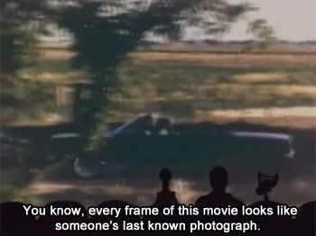

Stefanie Sequeira
Product designer, hero messaging
Ayo world what's good. To do list:
- Figure out Bootstrap stuff
- ARIA
- reduce-motion query
- Pause button
- Double check responsiveness
- Customize CSS variables
- What is Sass and how do I work it
- General tidiness like load.js for the nav/footer and such
- Index page
- Big cool hero
Contact formPHP so maybe not- Content
- Case template
Project info columnContent grids- Big cool header
- Fun/Work link page(s)
- Actually write out the cases hehehe
- Image hosting. Repo? Imgur? Catbox?
- Figma embeds would be cool
Dark mode toggle